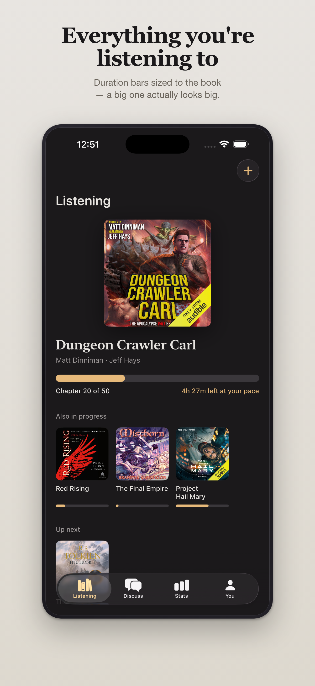
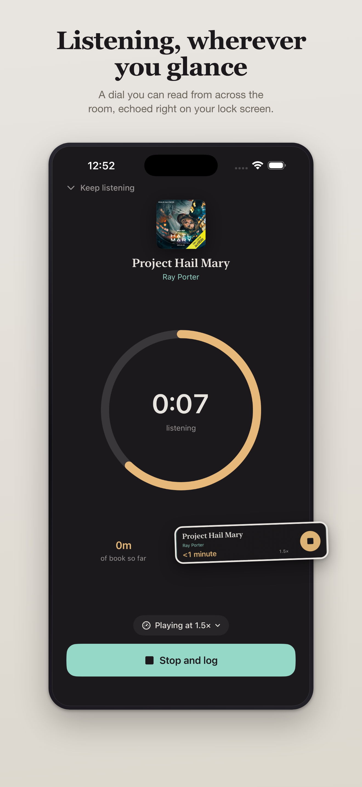
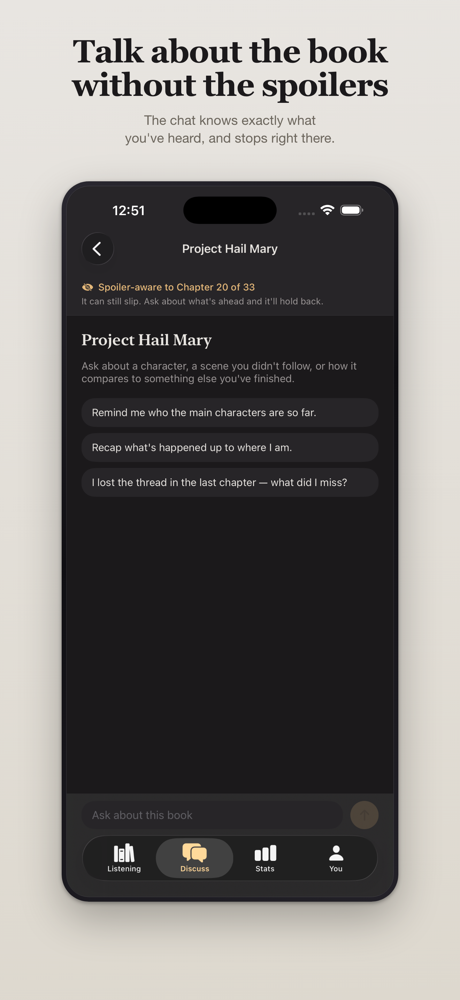

Narrator shelves
Browse every performance by narrator, remember the voices you love, and rate narration separately from the story.
Made for audiobook people
BookTrace remembers the parts other trackers miss: who narrated it, what speed you used, where you stopped, and how many hours were actually yours.
34 minutes heard at 1.5× · 23 minutes of your time

01Hours, not pagesYour real listening time
02Narrators countRate the performance
03Your exact placeChapter-aware progress
04Private by defaultYour library stays local
A tracker that understands audio
Log a session at the speed you actually listened. BookTrace keeps story time and clock time separate, so your totals finally mean something.

A conversation that knows where you are
BookTrace gives the discussion your current chapter and asks it to stay behind you. Explore a character, untangle a scene, or ask what you may have missed.
AI can still make mistakes. BookTrace shows the boundary clearly and makes discussion entirely optional.
“Why does this character’s choice feel so different from the first half?”

Keep the record. Keep the ritual.
Browse every performance by narrator, remember the voices you love, and rate narration separately from the story.
See streaks, hours, speeds, genres, and finished books without pretending audio is print.
Your books, notes, and listening history stay on your iPhone. No BookTrace account is required.
BookTrace for iPhone